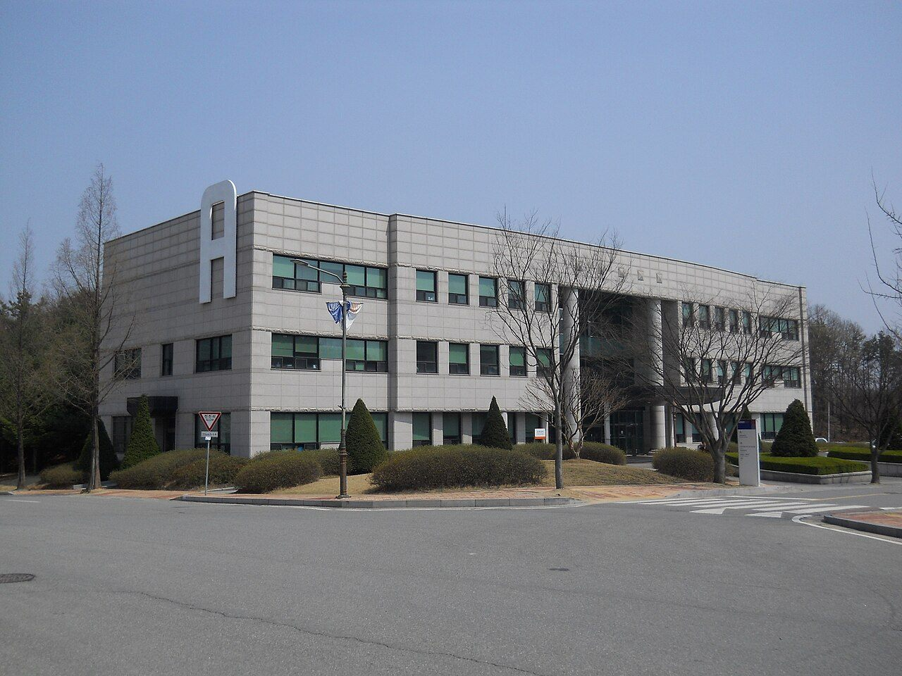

한국기술교육대학교는 충청남도 천안시에 있는 국립대학법인 대학으로, 코리아텍(KOREATECH) 또는 한기대라는 이름으로 더 많이 불립니다. 고용노동부가 설립한 대학이라는 점에서 다른 국립대와 성격이 조금 다릅니다. 공학 계열이 중심이고, 실습과 현장 교육의 비중이 크다는 것이 이 대학을 이야기할 때 늘 따라오는 설명입니다.
2027학년도 수시 원서접수는 2026년 9월 7일부터 11일까지였고 이미 마감됐습니다. 마감 결과 13.20대 1의 경쟁률이 나왔는데, 보도에 따르면 최근 12년 중 가장 높은 수치였습니다. 그럼에도 지금 정리해 두는 이유는, 이 대학의 전형 구조가 고1·고2 자녀를 두신 가정에 “수능을 어디까지 가져갈 것인가”를 아주 선명하게 되묻기 때문입니다. 같은 대학 안에서 수능 부담이 정반대인 문이 둘 있습니다.
먼저 발표된 규모입니다.
- 수시 전체 — 800명 안팎을 선발합니다. 전년도보다 20명가량 늘어난 규모로 보도됐습니다.
- 학생부종합전형 — 360명대로, 세 전형 중 가장 많습니다.
- 학생부교과전형 — 270명대이며, 이 안에 일반전형과 지역인재전형이 나뉘어 있습니다.
- 논술전형 — 150명입니다.
공학 중심 대학인데 학생부종합의 몫이 가장 크다는 점이 이 대학의 성격을 보여 줍니다. 실습과 프로젝트가 많은 학교이다 보니, 학교생활기록부에 남은 활동의 결이 평가에서 무게를 갖습니다.
학생부교과 — 내신 100%, 다만 수능최저가 붙습니다
학생부교과전형은 학생부 교과성적 100%로 선발합니다. 면접도 서류도 없이 내신만 봅니다. 여기까지만 들으면 “내신만 좋으면 되는 전형” 같지만, 결정적인 조건이 하나 붙습니다. 수능최저학력기준이 적용됩니다.
이 점이 중요한 이유는, 교과전형을 노리는 학생일수록 수능 공부를 일찍 놓기 쉽기 때문입니다. 내신 100% 전형이라는 말만 보고 3학년 1학기까지 내신에 전부를 쏟았는데, 정작 수능최저를 못 맞춰 불합격하는 경우가 매년 나옵니다. 이 대학의 교과전형을 생각하신다면 내신과 수능을 동시에 끌고 가는 계획이 전제되어야 합니다.
또 하나, 교과전형 안에 지역인재전형이 따로 있습니다. 대학이 있는 권역의 고등학교를 다닌 학생을 별도로 뽑는 전형입니다. 2027학년도 지역인재의 기본 요건은 해당 지역 고등학교에서 전 교육과정(3년)을 이수하는 것입니다. 참고로 중학교 때부터의 거주 요건이 강화되는 것은 2028학년도부터라, 지금 고1·고2인 학생과 중학생은 적용되는 기준이 서로 다릅니다.
학생부종합(창의인재) — 서류형과 면접형이 나뉩니다
학생부종합전형은 두 갈래로 운영됩니다.
- 서류형 — 학교생활기록부를 바탕으로 학업역량 35%, 전공적합성 35%, 나우리역량 30%의 비중으로 종합 정성평가합니다. 면접 없이 서류만으로 끝납니다.
- 면접형 — 1단계에서 학생부 평가로 4배수를 선발하고, 2단계에서 10분 확인면접을 실시합니다. 최종 점수는 1단계 성적 60% + 면접 40%입니다.
평가 항목 중 ‘나우리역량’이라는 이름이 낯설게 보이실 수 있습니다. 이 대학이 자체적으로 쓰는 평가 요소인데, 30%라는 비중은 결코 작지 않습니다. 학업역량과 전공적합성만 챙겨서는 70%까지밖에 대비되지 않는다는 뜻으로 읽으시면 됩니다.
면접형에서 눈여겨보실 것은 “확인면접”이라는 표현입니다. 새로운 지식을 물어 아이를 시험하는 자리가 아니라, 학교생활기록부에 적힌 내용이 실제로 본인의 경험이 맞는지를 확인하는 자리라는 뜻입니다. 그래서 준비 방법도 달라집니다. 예상 문제를 외우는 것보다, 자기 생활기록부를 처음부터 끝까지 다시 읽고 각 줄에 대해 “그때 내가 무엇을 왜 했는지”를 말로 설명해 보는 연습이 훨씬 직접적입니다. 시간도 10분으로 길지 않습니다.
또 하나 실질적인 조언을 드리자면, 서류형과 면접형 중 어느 쪽이 유리한지는 아이의 생활기록부가 ‘읽어서 설득되는 유형’인지 ‘말로 풀어야 살아나는 유형’인지에 달려 있습니다. 기록이 촘촘하고 그 자체로 흐름이 보이면 서류형이, 기록은 담백한데 말로 설명하면 납득이 되는 아이라면 면접형이 어울립니다.
논술 — 수능최저가 없고, 교과서·EBS 수준으로 냅니다
논술전형은 논술성적 100%로 선발합니다. 학생부를 전혀 반영하지 않고 시험 하나로 결정되는 구조입니다. 그리고 수능최저학력기준이 적용되지 않습니다.
이 두 가지를 합치면 이 전형의 성격이 분명해집니다. 내신이 아쉽고 수능도 불안한 학생에게 열려 있는 문입니다. 같은 대학의 교과전형이 “내신과 수능을 둘 다”를 요구하는 것과 정확히 반대입니다.
다만 “수능최저가 없다”는 조건은 지원자를 끌어모읍니다. 실제로 이 대학 논술은 경쟁률이 높게 형성되는 편입니다. 부담이 적은 만큼 뚫기가 쉽다는 뜻은 아니라는 점을 함께 보셔야 합니다.
출제 수준에 대해 대학은 “고등학교 교육과정을 충실히 이수한 학생이라면 사교육 도움 없이 준비 가능한 수준”이라고 밝히고 있습니다. 문항이 교과서와 EBS 수능교재의 유형·수준을 참고해 출제된다는 것이 그 근거입니다. 이 말을 “쉽다”로 읽으시면 곤란하고, “기출 형식에 익숙해지는 것이 핵심이고, 학교 밖 특별한 소재는 나오지 않는다”로 읽으시는 편이 맞습니다. 그래서 준비의 첫걸음은 학원 등록이 아니라 대학 입학처가 공개하는 기출문제와 모의논술을 직접 풀어 보는 것입니다.
지원 전 체크리스트
- 교과전형의 수능최저를 계산해 보셨는가. 이 전형은 내신 100%이지만 수능최저가 붙습니다. 내신만 보고 들어가면 가장 크게 어긋나는 지점입니다.
- 지역인재 자격에 해당하는가. 해당 권역 고등학교에서 3년을 다녔는지가 기준입니다. 해당된다면 지원 폭이 하나 늘어납니다.
- 학생부종합은 서류형인가 면접형인가. 면접형은 4배수 안에 들어야 면접 기회가 생기고, 면접이 40%를 차지합니다.
- 생활기록부를 아이가 직접 읽어 봤는가. 확인면접은 적힌 내용을 되묻는 자리입니다. 본인이 내용을 모르면 10분을 버팁니다.
- 논술 기출을 한 번이라도 풀어 봤는가. 수능최저가 없다는 이유만으로 지원하기 전에, 시험 형식이 아이에게 맞는지부터 확인하셔야 합니다.
마무리하며
한국기술교육대학교의 2027학년도 수시를 한 줄로 줄이면 이렇습니다. 내신에 수능 몇 과목을 얹을 수 있으면 학생부교과, 생활기록부가 촘촘하면 학생부종합 서류형, 말로 풀어내는 데 강하면 면접형, 시험 당일에 승부를 보려면 논술. 네 갈래가 요구하는 것이 서로 거의 겹치지 않습니다.
특히 교과전형에는 수능최저가 있고 논술전형에는 없다는 이 한 가지가, 같은 대학을 두고도 전혀 다른 2년을 만듭니다. 고2 자녀를 두셨다면 겨울이 오기 전에 “수능을 최저 맞출 만큼이라도 끝까지 가져갈 것인가”에 먼저 답을 내려 보시기 바랍니다. 그 답 하나로 위의 네 갈래 중 절반이 지워집니다.
와와 학습코칭센터에서는 아이의 학년과 성적 흐름에 맞춰 목표 대학과 전형을 함께 정리해 드립니다. 내신으로 갈지 수능을 함께 가져갈지부터 막막하시다면, 가까운 센터에서 상담을 신청해 보세요.
※ 본 글은 한국기술교육대학교 2027학년도 수시모집 관련 언론 보도를 바탕으로 정리했습니다. 인용한 모집 인원과 전형 방법은 보도 시점에 발표된 내용이며, 보도마다 전체 모집 인원이 조금씩 다르게 나와 이 글에서는 완충된 표현(800명 안팎 등)으로만 적었습니다. 학생부교과전형의 수능최저학력기준 등급 조건, 모집단위별 세부 모집 인원, 학생부 반영 교과와 등급 환산 방식, 지역인재전형의 세부 지원 자격과 대상 권역, 논술고사의 문항 수·출제 범위·시험 시간과 고사 일자, 면접 실시 일자, 실기 및 정원 외 전형의 조건, 합격자 발표 일정은 확인하지 못해 이 글에 담지 않았습니다. 확인되지 않은 숫자와 기준은 기재하지 않았습니다. 사진은 2015년에 촬영된 것으로 현재 모습과 다를 수 있습니다. 세부 사항은 모집요강에서 확정되며 변경될 수 있으므로, 반드시 한국기술교육대학교 입학처의 2027학년도 수시모집요강 원문에서 본인 지원 모집단위 기준으로 최종 확인하시기 바랍니다.